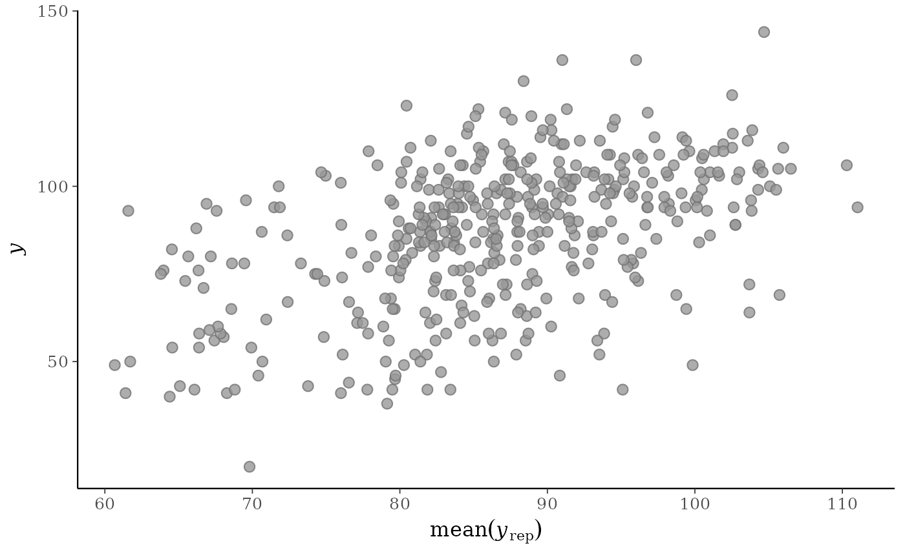
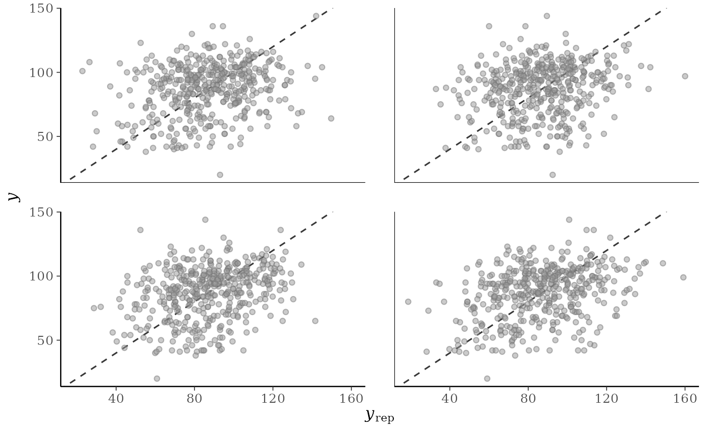
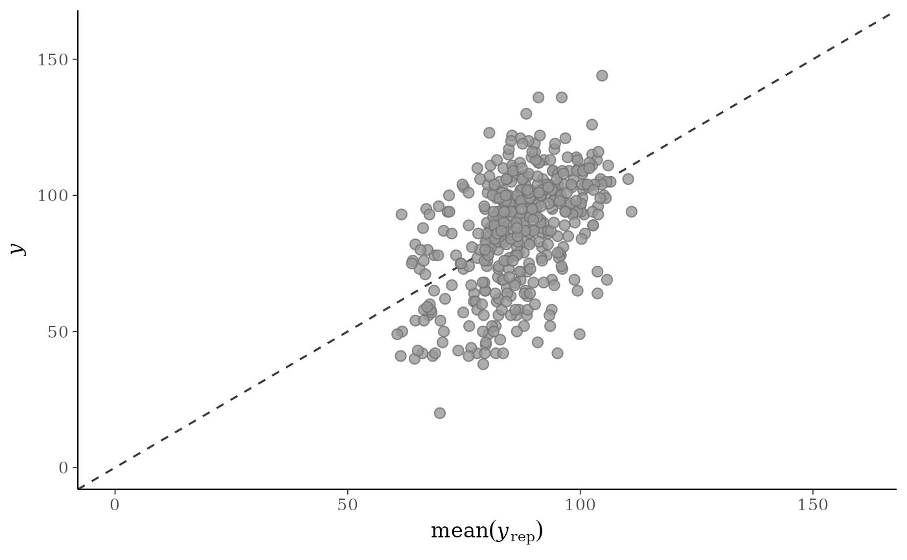
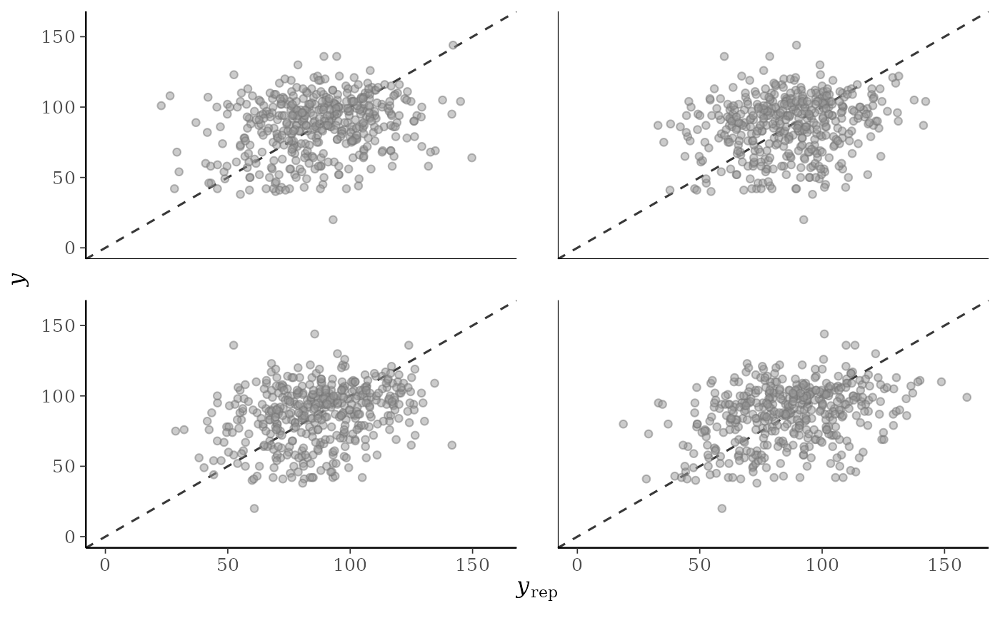
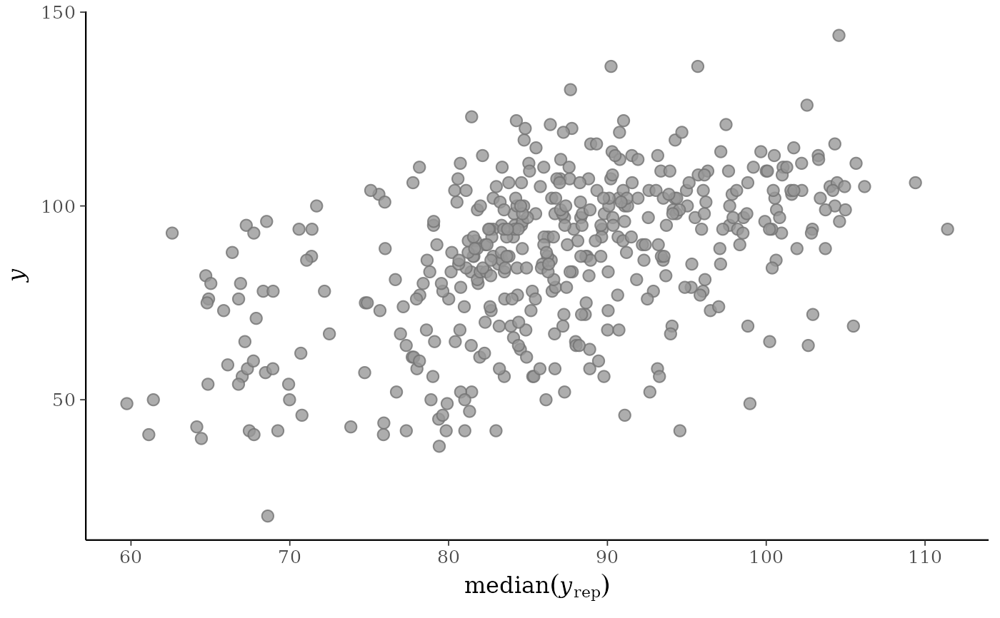
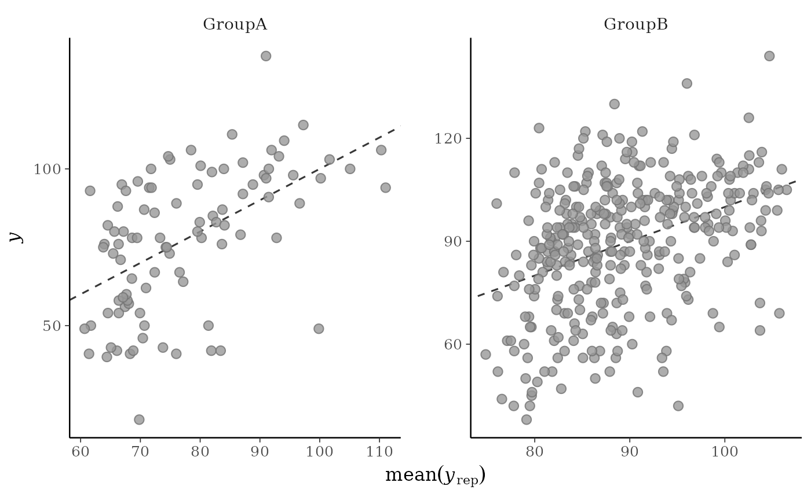
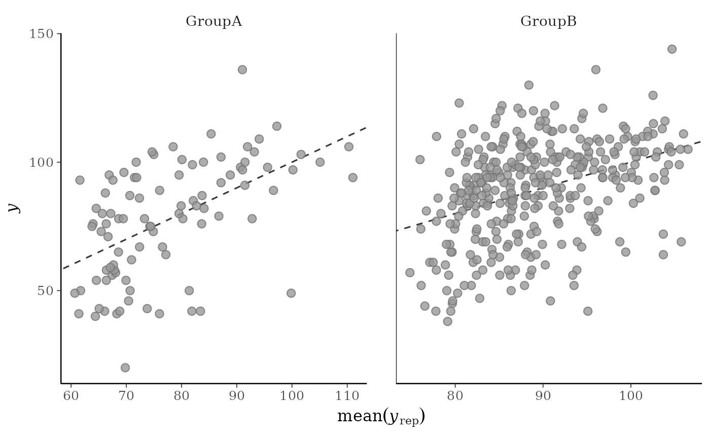

Scatterplots of the observed data y vs. simulated/replicated data
yrep from the posterior predictive distribution. See the
Plot Descriptions and Details sections, below.
Usage
ppc_scatter(
y,
yrep,
...,
facet_args = list(),
size = 2.5,
alpha = 0.8,
ref_line = TRUE
)
ppc_scatter_avg(
y,
yrep,
...,
stat = "mean",
size = 2.5,
alpha = 0.8,
ref_line = TRUE
)
ppc_scatter_avg_grouped(
y,
yrep,
group,
...,
stat = "mean",
facet_args = list(),
size = 2.5,
alpha = 0.8,
ref_line = TRUE
)
ppc_scatter_data(y, yrep)
ppc_scatter_avg_data(y, yrep, group = NULL, stat = "mean")Arguments
- y
A vector of observations. See Details.
- yrep
An
SbyNmatrix of draws from the posterior (or prior) predictive distribution. The number of rows,S, is the size of the posterior (or prior) sample used to generateyrep. The number of columns,Nis the number of predicted observations (length(y)). The columns ofyrepshould be in the same order as the data points inyfor the plots to make sense. See the Details and Plot Descriptions sections for additional advice specific to particular plots.- ...
Currently unused.
- facet_args
A named list of arguments (other than
facets) passed toggplot2::facet_wrap()orggplot2::facet_grid()to control faceting. Note: ifscalesis not included infacet_argsthen bayesplot may usescales="free"as the default (depending on the plot) instead of the ggplot2 default ofscales="fixed".- size, alpha
Arguments passed to
ggplot2::geom_point()to control the appearance of the points.- ref_line
If
TRUE(the default) a dashed line with intercept 0 and slope 1 is drawn behind the scatter plot.- stat
A function or a string naming a function for computing the posterior average. In both cases, the function should take a vector input and return a scalar statistic. The function name is displayed in the axis-label, and the underlying
$rep_labelforppc_scatter_avg_data()includes the function name. Defaults to"mean".- group
A grouping variable of the same length as
y. Will be coerced to factor if not already a factor. Each value ingroupis interpreted as the group level pertaining to the corresponding observation.
Value
The plotting functions return a ggplot object that can be further
customized using the ggplot2 package. The functions with suffix
_data() return the data that would have been drawn by the plotting
function.
Details
For Binomial data, the plots may be more useful if the input contains the "success" proportions (not discrete "success" or "failure" counts).
Plot Descriptions
ppc_scatter()For each dataset (row) in
yrepa scatterplot is generated showingyagainst that row ofyrep. For this plotyrepshould only contain a small number of rows.ppc_scatter_avg()A single scatterplot of
yagainst the average values ofyrep, i.e., the points(x,y) = (average(yrep[, n]), y[n]), where eachyrep[, n]is a vector of length equal to the number of posterior draws andaverage()is a summary statistic. Unlike forppc_scatter(), forppc_scatter_avg()yrepshould contain many draws (rows).ppc_scatter_avg_grouped()The same as
ppc_scatter_avg(), but a separate plot is generated for each level of a grouping variable.
References
Gelman, A., Carlin, J. B., Stern, H. S., Dunson, D. B., Vehtari, A., and Rubin, D. B. (2013). Bayesian Data Analysis. Chapman & Hall/CRC Press, London, third edition. (Ch. 6)
See also
Other PPCs:
PPC-censoring,
PPC-discrete,
PPC-distributions,
PPC-errors,
PPC-intervals,
PPC-loo,
PPC-overview,
PPC-test-statistics
Examples
y <- example_y_data()
yrep <- example_yrep_draws()
p1 <- ppc_scatter_avg(y, yrep)
p1
# don't draw line x=y
ppc_scatter_avg(y, yrep, ref_line = FALSE)

p2 <- ppc_scatter(y, yrep[20:23, ], alpha = 0.5, size = 1.5)
p2

# give x and y axes the same limits
lims <- ggplot2::lims(x = c(0, 160), y = c(0, 160))
p1 + lims

p2 + lims
#> Warning: Removed 1 row containing missing values or values outside the scale range
#> (`geom_point()`).

# "average" function is customizable
ppc_scatter_avg(y, yrep, stat = "median", ref_line = FALSE)

# for ppc_scatter_avg_grouped the default is to allow the facets
# to have different x and y axes
group <- example_group_data()
ppc_scatter_avg_grouped(y, yrep, group)

# let x-axis vary but force y-axis to be the same
ppc_scatter_avg_grouped(y, yrep, group, facet_args = list(scales = "free_x"))
